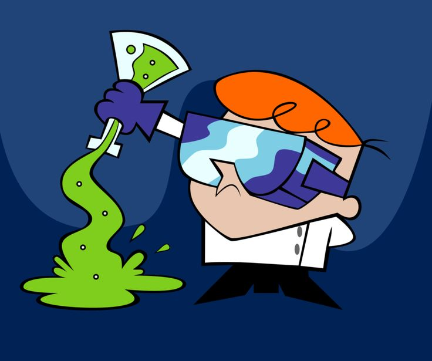

Dexter McPherson
Telefone:
(81) 99209-6298
E-mail:
dextermcpherson@gmail.com
Objetivos
Criar um software que ajude a organizar meu laboratório secreto e todos os meus equipamentos de forma eficiente.
Construir um sistema de segurança ultra-avançado para proteger minhas invenções e evitar que meu laboratório seja descoberto.
Desenvolver um algoritmo que me ajude a identificar criminosos em potencial com base em padrões de comportamento online.
Formação
Universidade de Tecnologia e Ciência de Miami (UTFM)
- Bacharelado em Análise e Desenvolvimento de Sistemas - 2018/2021
Escola de Ciência e Tecnologia Avançada de Miami
- Programa Avançado em Ciência da Computação - 2014/2017